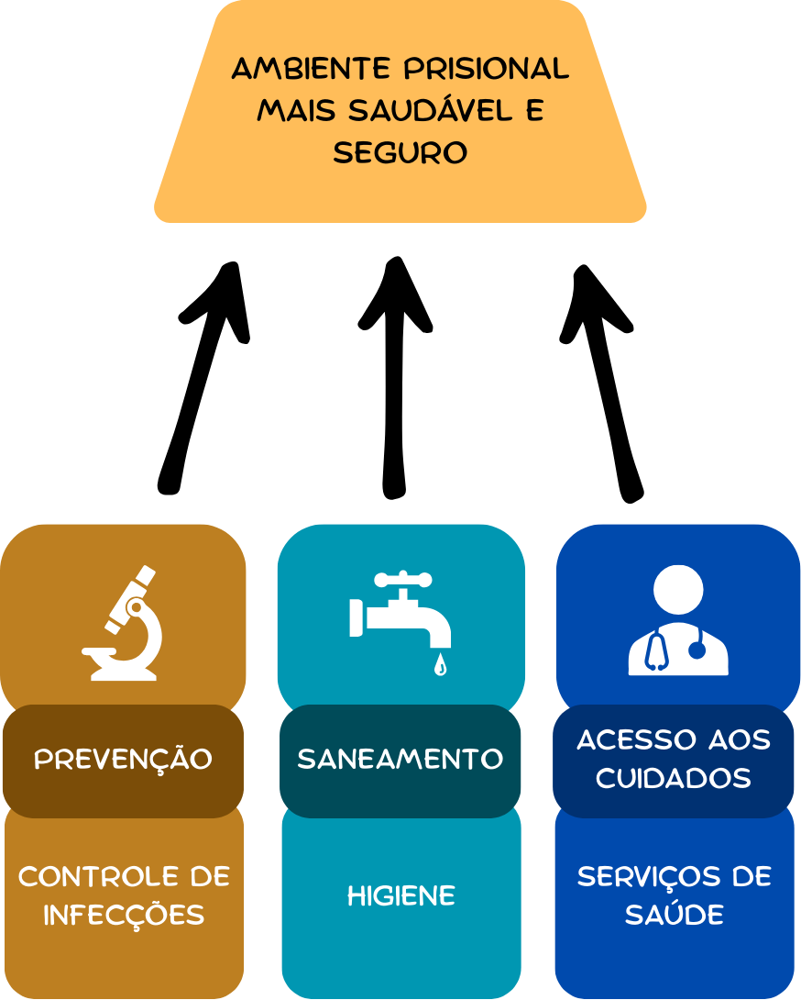
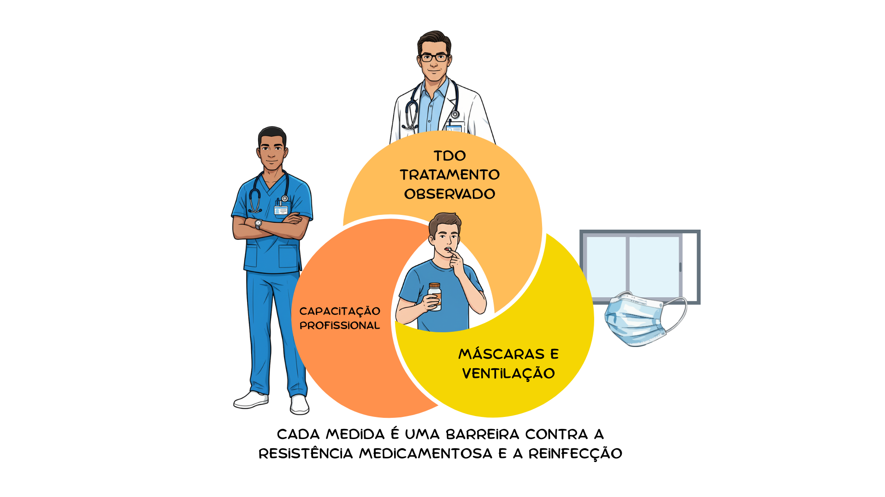
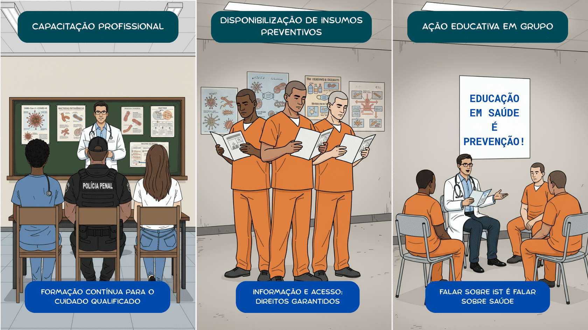
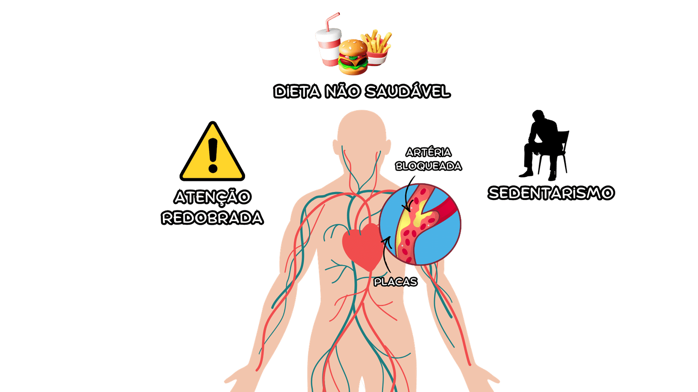
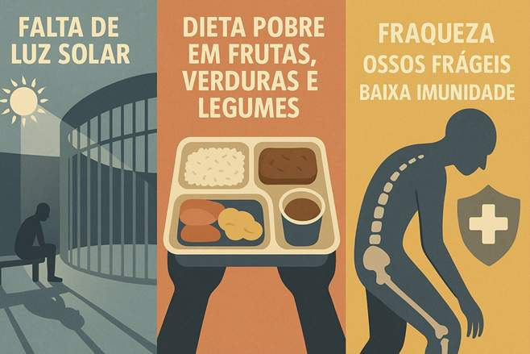
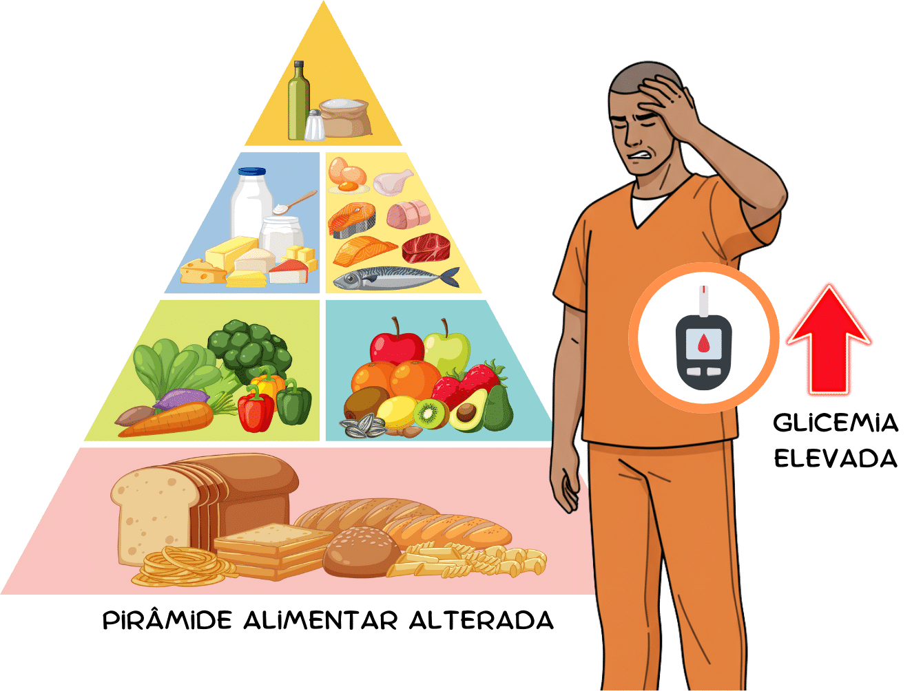
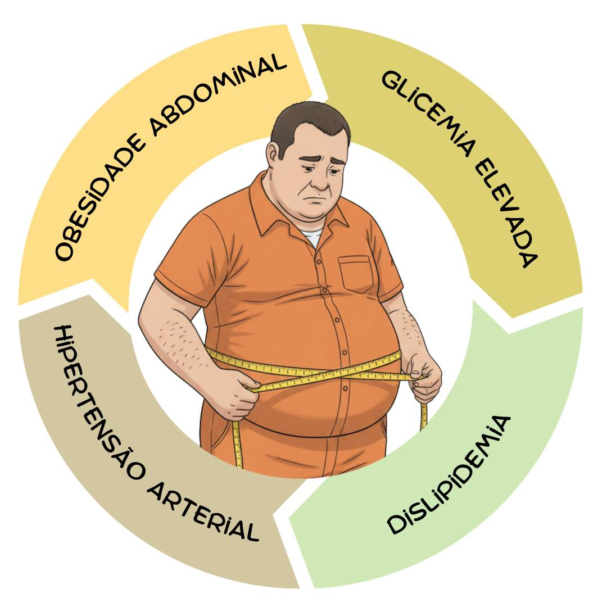
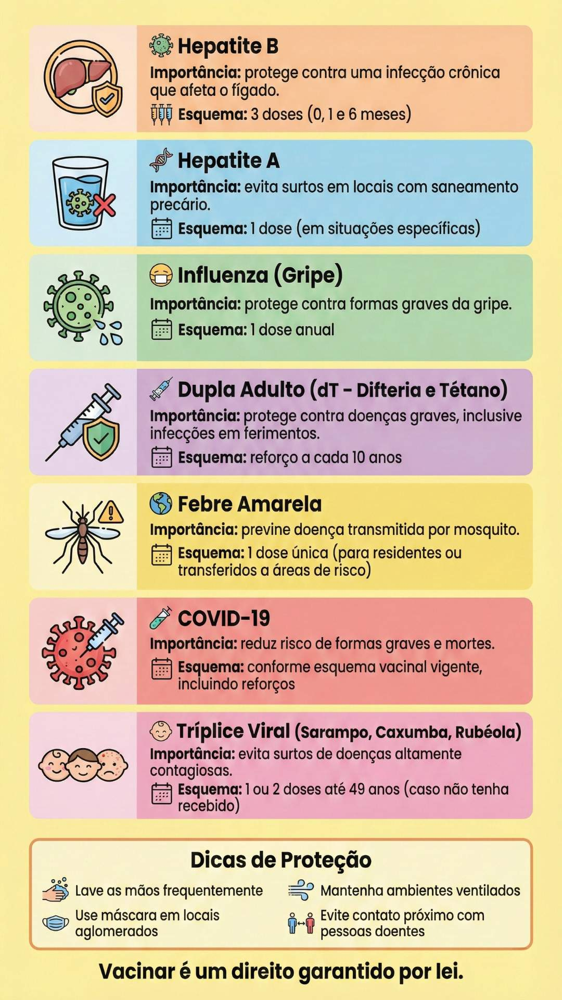

Apresentação da Unidade
Olá, estudante-trabalhador! Seja bem-vindo!
Neste momento da sua formação, vamos aprofundar um tema essencial: a prevenção de agravos e doenças transmissíveis e não transmissíveis no contexto prisional.
Você já se perguntou como a vigilância epidemiológica pode transformar a realidade da saúde nas instituições penais? Ou como as estratégias de prevenção podem garantir um ambiente mais seguro para pessoas presas e profissionais? Aqui, vamos discutir desde aspectos importantes de doenças transmissíveis como tuberculose, hepatites virais, HIV/Aids e hanseníase até os desafios impostos por doenças crônicas como hipertensão, diabetes e síndrome metabólica.
Esta Unidade não apresenta apenas conceitos; também propõe uma reflexão prática: como integrar vigilância e assistência de forma eficiente? Como garantir o acesso oportuno à vacinação, a tratamentos e à promoção da saúde no sistema prisional?
A proposta é criar um espaço de aprendizado dinâmico e colaborativo, no qual você poderá analisar e debater estratégias fundamentais para a promoção da saúde, refletindo sobre como aplicá-las de forma prática no cenário desafiador em que você está inserido. Vamos juntos construir soluções?
Objetivos de Aprendizagem da Unidade
Conhecer o conceito e a aplicação das ações integradas de vigilância e assistência em saúde;
Identificar as ações de prevenção de doenças transmissíveis no contexto prisional: tuberculose, hanseníase, hepatites virais, HIV/Aids e outras infecções sexualmente transmissíveis, doenças diarreicas e infecções cutâneas/dermatoses de interesse sanitário;
Identificar as ações de prevenção de doenças não transmissíveis e agravos não infecciosos no contexto prisional: dislipidemia, hipovitaminose, diabetes mellitus, hipertensão arterial sistêmica, excesso de peso e síndrome metabólica;
Conhecer o calendário vacinal do adulto e principais medidas de proteção, como a vacinação contra hepatites e influenza;
Reconhecer a importância do atendimento integrado e do acesso às redes de atenção especializada, hospitalar e de urgência e a redes temáticas.
Carga Horária de Estudo: 6 horas
2.1 Vigilância em saúde no sistema prisional: desafios e estratégias para a promoção de ambientes seguros e humanizados
O ambiente prisional, muitas vezes, favorece a disseminação de doenças infecciosas e o agravamento de condições crônicas devido a fatores como superlotação, ventilação inadequada, baixa imunização e dificuldades no acesso à assistência em saúde. Além disso, a vulnerabilidade social em que a maioria das pessoas privadas de liberdade (PPL) está antes do aprisionamento faz com que muitas vezes cheguem ao sistema prisional já em condições de saúde precárias (Brasil, 2024a).
A vigilância em saúde no sistema prisional desempenha um papel estratégico na prevenção, detecção e resposta rápida a doenças e agravos que afetam tanto as PPL quanto os profissionais que atuam nesse ambiente, mas como garantir que essas ações sejam eficazes? Como integrar os serviços de saúde à segurança para oferecer um atendimento eficiente? Vamos refletir sobre esses desafios e caminhos possíveis!
2.1.1 Saúde nas instituições penais: integrando vigilância e assistência
A vigilância em saúde no sistema prisional deve ser entendida como um processo contínuo de observação, análise e resposta aos agravos e determinantes que afetam a saúde da população privada de liberdade, visando à redução dos riscos e à melhoria das condições sanitárias e de saúde (Brasil, 2014). Nessa perspectiva, podemos destacar três pilares fundamentais: vigilância epidemiológica, vigilância sanitária e saúde do trabalhador no sistema prisional (Figura 1).
Figura 1 - Pilares para um ambiente prisional mais saudável e seguro

Fonte: elaboração das autoras (2025).2.1.1.1 Vigilância epidemiológica
A vigilância epidemiológica tem o objetivo de identificar, monitorar e controlar doenças transmissíveis e não transmissíveis nas instituições penais. Para isso, é essencial:
Clique para interagir
Doenças como tuberculose, hepatites virais, HIV/Aids e infecções sexualmente transmissíveis (ISTs) (Brasil, 2024b);
Infecções gastrointestinais e doenças de pele, como escabiose, especialmente em instituições superlotadas, onde as condições favorecem a disseminação dessas doenças (United Nations Office On Drugs And Crime, 2024);
Fazer acompanhamento contínuo dos casos identificados para reduzir a transmissão nas instituições penais (Brasil, 2022).
2.1.1.2 Vigilância sanitária
A vigilância sanitária tem o objetivo de garantir condições adequadas de infraestrutura, higiene e alimentação nas instituições penais (Brasil, 2014). Dentre as ações prioritárias, destacam-se:
Clique para interagir
Com a finalidade de prevenir surtos de doenças gastrointestinais (Brasil, 2021a);
Para evitar a disseminação de doenças infecciosas nas celas, como é realizado em ambientes fora do sistema prisional (Brasil, 2016);
Para garantir um ambiente minimamente adequado à saúde da população privada de liberdade (Brasil, 2014).
2.1.1.3 Saúde do trabalhador no sistema prisional
Os profissionais de saúde e segurança que atuam nas instituições penais estão expostos a diversos riscos ocupacionais, incluindo doenças infectocontagiosas, estresse e esgotamento mental (Brasil, 2024c). Por isso, é fundamental implementar medidas como:
Uso de equipamentos de proteção individual (EPIs) adequados para cada tipo de atendimento;
Promoção da saúde mental dos trabalhadores por meio de capacitações voltadas ao cuidado emocional e suporte psicossocial contínuo, com ações que visem fortalecer a resiliência, a escuta qualificada e o manejo do estresse no contexto prisional, reconhecido por suas condições adversas e de alta pressão;
Acompanhamento da saúde ocupacional, com a realização de exames periódicos e aplicação de protocolos de segurança bem estabelecidos (Evers et al., 2019).
Diante das múltiplas vulnerabilidades existentes no ambiente prisional, como os altos níveis de violência, a restrição de vínculos afetivos e sociais, a insegurança alimentar e as tensões institucionais, é necessário refletir criticamente: de que forma ações integradas de vigilância, cuidado e promoção da saúde poderiam, de fato, contribuir para a construção de um ambiente mais digno, seguro e verdadeiramente saudável para todos que atuam no sistema prisional de alguma forma?
2.1.2 Cuidar para conter: o enfrentamento das doenças transmissíveis nas instituições penais
A presença de doenças no sistema prisional não afeta apenas as PPL, mas também os profissionais que atuam nos estabelecimentos penais e a comunidade em geral. Vamos pensar em dois grandes grupos de doenças que precisam ser enfrentadas: doenças transmissíveis e doenças não transmissíveis.
2.1.2.1 Doenças transmissíveis
A prevenção de doenças transmissíveis no sistema prisional é um desafio constante, dada a alta vulnerabilidade da população privada de liberdade. Superlotação, ventilação inadequada, baixa cobertura vacinal e dificuldades no acesso à saúde contribuem para a rápida disseminação de infecções nas instituições penais (Conselho Nacional de Justiça, 2023).
Por isso, é essencial discutir estratégias eficazes de rastreamento, diagnóstico e controle das principais doenças transmissíveis que afetam essa população. Vamos explorar cada uma delas e refletir sobre como podemos aprimorar as ações de prevenção!
2.1.2.1.1 Tuberculose
A tuberculose, também conhecida como TB, é uma das doenças mais prevalentes no sistema prisional, com incidência até 26 vezes maior do que na população em geral (Brasil, 2025a). Isso se deve a diversos fatores:
Clique para interagir
Facilitam a transmissão do Mycobacterium tuberculosis e de outras doenças respiratórias, como aconteceu na pandemia de covid-19 (Carvalho; Santos; Santos, 2020);
Dificultando o controle da infecção (Carvalho; Santos; Santos, 2020).
Pode ser agravada por diversos fatores amplamente descritos na literatura, como desnutrição, presença de comorbidades crônicas, coinfecções e doenças imunossupressoras, que são frequentemente associadas às precárias condições de vida na instituição penal (United Nations Office On Drugs And Crime, 2024).
gora, pense: como podemos minimizar esses riscos na rotina prisional? Para reduzir a transmissão da tuberculose, é essencial implementar estratégias de rastreamento ativo, educação permanente em saúde para profissionais e diagnóstico precoce incluindo:
Clique para interagir
Aliada ao acompanhamento periódico dos casos, porque a exposição frequente à bactéria da tuberculose eleva significativamente o risco de infecção e adoecimento (Nogueira; Abrahão; Galesi, 2011; Brasil, 2019a).
Associado à inteligência artificial para identificar rapidamente casos suspeitos (Min et al., 2025).
para garantir o diagnóstico em poucas horas (Brasil, 2022);
Atenção!
Atenção! NÃO PODEMOS ESQUECER DOS MÉTODOS DIAGNÓSTICOS TRADICIONAIS. A baciloscopia é um método simples e rápido que contribui para a detecção precoce de casos com maior potencial de transmissão. Já a cultura, embora seja mais demorada, é considerada o padrão-ouro para confirmação da doença, uma vez que apresenta maior sensibilidade e possibilita a realização de testes de sensibilidade aos medicamentos, sendo essencial para o diagnóstico preciso e para o monitoramento da resistência bacteriana. Portanto, a associação desses exames fortalece a acurácia diagnóstica e orienta adequadamente o tratamento dos casos identificados.
- Tratamento Diretamente Observado (TDO), estratégia recomendada pela Organização Mundial da Saúde (OMS) para garantir a adesão ao tratamento, reduzindo a resistência medicamentosa (Brasil, 2022) (Figura 2);
- Uso adequado de máscaras e ventilação nos espaços compartilhados;
- Capacitação contínua de profissionais para o manejo adequado da tuberculose no sistema prisional (Ely et al., 2023).
Figura 2 - Caminhos para prevenção de novos casos de tuberculose

Fonte: elaboração das autoras (2025).2.1.2.1.2 Hepatites virais e HIV/Aids
Quando comparamos as taxas de infecção por hepatite C na população privada de liberdade com as taxas de infecção na população em geral, vemos uma diferença notável. A prevalência de 9,7% encontrada entre as PPL é muito superior à prevalência de 1,5% na população brasileira (Rosa et al., 2012). Entre julho e dezembro de 2019, foram registrados 8.523 casos de HIV no sistema prisional brasileiro. Considerando que a população privada de liberdade totalizava 748.009 pessoas naquele período, a prevalência de HIV era de 11,39 casos a cada 1.000 PPL (Brasil, 2019b).
A transmissão do HIV e das hepatites B e C ocorre principalmente por contato com sangue e fluidos corporais, sendo facilitada por fatores como:
- Uso compartilhado de objetos perfurocortantes, como lâminas de barbear e seringas (Brasil, 2022);
- Relações sexuais desprotegidas (Brasil, 2017a);
- Baixa adesão a políticas de redução de danos, dificultando a prevenção entre usuários de drogas injetáveis (Inglez-Dias et al., 2014).
Existem estratégias de prevenção e tratamento, incluindo Profilaxia Pré-Exposição (PrEP) e Profilaxia Pós-Exposição (PEP). A prevenção combinada é a estratégia mais eficaz para reduzir a ocorrência de novos casos (Figura 3), englobando diferentes ações complementares, como:
Clique para interagir
Para indivíduos em maior risco (Brasil, 2025b);
Para situações de exposição ao vírus;
Que permitem a introdução imediata da terapia antirretroviral (TARV) (Brasil, 2024e)
Figura 3 - Estratégias de prevenção combinada para HIV
2.1.2.1.3 Hanseníase e infecções sexualmente transmissíveis
Clique para interagir
Como agravo relevante à saúde pública no sistema prisional articulando ações de vigilância ativa para detecção precoce de casos e estratégias voltadas à redução do estigma associado à doença;
Com especial atenção às PPL recém-ingressas no sistema (Brasil, 2002);
Para todas as pessoas diagnosticadas de forma segura e supervisionada (Brasil, 2001);
Com a participação da equipe de Atenção Primária Prisional (eAPP) e policiais penais para facilitar a identificação precoce
Já as ISTs, como sífilis, gonorreia e clamídia, têm alta prevalência nas instituições penais e são frequentemente subdiagnosticadas. Dada a vulnerabilidade das PPL, o acesso à testagem e ao tratamento oportuno deve ser prioridade das políticas de saúde. Assim, é fundamental:
Clique para interagir
Inclusive na triagem de entrada e em momentos estratégicos da permanência da PPL no sistema prisional (Brasil, 2005);
Com fluxo articulado entre a Atenção Primária à Saúde (APS) e os serviços de referência (Organización Panamericana de la Salud, 2025);
Com linguagem acessível e que abordem prevenção, autocuidado e combate ao estigma relacionado às ISTs (Brasil, 2017b).
A prevenção da hanseníase e das ISTs exige uma abordagem interdisciplinar e intersetorial que envolva profissionais de saúde, segurança, educação e assistência social, visando não apenas ao controle das doenças, mas à promoção da dignidade e do cuidado no sistema prisional (Figura 4).
Figura 4 - Abordagem intersetorial e interdisciplinar para promoção do cuidado

Fonte: elaboração das autoras (2025).2.1.2.1.4 Doenças diarreicas e infecções dermatológicas
As condições estruturais do sistema prisional facilitam a disseminação de doenças diarreicas e as infecções dermatológicas. Problemas como água contaminada, ventilação precária e falta de higiene favorecem surtos de:
Clique para interagir
Causadas por agentes como rotavírus e Escherichia coli (Evans Junior; Evans, 1996);
Se espalham rapidamente pelo contato pele a pele. Não tomar banho diariamente e lavar roupas menos de uma vez por semana são comportamentos que já foram identificados como fatores associados à ocorrência de escabiose em pessoas presas (Kouotou et al., 2016).
2.1.2.2 Doenças não transmissíveis
O sistema prisional também enfrenta desafios para fazer o controle de doenças crônicas e agravos metabólicos, que muitas vezes passam despercebidos. Há fatores ambientais que aumentam os riscos dessas condições na população privada de liberdade. Um estudo realizado em uma instituição penal no interior paulista encontrou prevalência de 24,8% de hipertensão arterial, 54,5% de dislipidemia, 49,9% de excesso de peso, 16,8% de síndrome metabólica e 2,5% de diabetes (Serra et al., 2022).
A superlotação, a alimentação inadequada, o sedentarismo e o estresse contínuo são elementos que favorecem o surgimento e a piora de doenças como hipertensão, diabetes, dislipidemia e síndrome metabólica, que aumentam o risco cardiovascular (Brasil, 2008). Vamos analisar como essas condições afetam a população privada de liberdade e quais estratégias podem ser adotadas para preveni-las e controlá-las de forma eficaz.
2.1.2.2.1 Dislipidemia
A dislipidemia se caracteriza por níveis elevados de colesterol total, LDL (colesterol ruim) e triglicerídeos, além da redução do HDL (colesterol bom). No contexto prisional, sua prevalência é elevada devido à (Figura 5):
Clique para interagir
Ricos em gorduras trans e saturadas;
Dificultando o diagnóstico precoce (Serra et al., 2022);
Somada à limitação de acesso a áreas externas e a programas de lazer e esporte, o que contribui para o sedentarismo.
Figura 5 - Fatores de risco para dislipidemia

Fonte: elaboração das autoras (2025).O acompanhamento regular e a implementação de ações nutricionais que visem reduzir o consumo de gorduras nocivas são fundamentais para a prevenção e controle da dislipidemia.
2.1.2.2.2 Hipovitaminose (deficiência de vitaminas)
A baixa exposição ao sol e a alimentação limitada em nutrientes geralmente levam a carências vitamínicas nas instituições penais, principalmente:
Clique para interagir
Altamente prevalente entre as PPL, especialmente em contextos de longa permanência e com baixa exposição à luz solar, fatores agravados pela arquitetura das instituições e pela rotina prisional restrita (Figura 6). Essa deficiência está associada ao aumento do risco de osteoporose, doenças cardiovasculares e desregulação imunológica. Diante disso, é fundamental destacar a importância da exposição diária ao sol como estratégia simples e de baixo custo para prevenção e tratamento da hipovitaminose. Medidas como a promoção de banhos de sol regulares e organizados, respeitando as condições de segurança, devem ser incorporadas à rotina prisional. Ressalta-se que a suplementação de vitamina D e de cálcio sem a adequada exposição solar tem eficácia limitada e acarreta custos adicionais para o sistema de saúde;
Favorecendo o surgimento de escorbuto e a redução da imunidade;
Pode causar anemia megaloblástica e neuropatias.
Figura 6 - Fatores de risco para hipovitaminoses

Fonte: elaboração das autoras (2025).A suplementação direcionada, aliada ao enriquecimento da dieta por meio de uma oferta nutricional adequada, assegura refeições balanceadas que promovem a saúde integral e contribuem para a prevenção de agravos entre as pessoas privadas de liberdade (Brasil, 2007).
2.1.2.2.3 Diabetes mellitus
A diabetes tipo 2 tem se tornado mais prevalente na população privada de liberdade devido a fatores como (Figura 7):
Clique para interagir
Como pães brancos e doces fornecidos nas refeições prisionais;
Essenciais para o controle glicêmico;
Dificulta o diagnóstico precoce;
Desregulam a resistência à insulina.
Figura 7 - Fatores de risco para diabetes mellitus

Fonte: elaboração das autoras (2025).2.1.2.2.4 Hipertensão arterial sistêmica
A hipertensão arterial sistêmica é um dos agravos mais comuns na população privada de liberdade, sendo influenciada por:
Clique para interagir
É utilizado em excesso nos alimentos fornecidos nas instituições penais;
E a ausência de espaços adequados para exercícios físicos;
Elevam os níveis de cortisol e a pressão arterial (Dias et al., 2019).
A triagem regular da pressão arterial e a redução do sal nos alimentos fornecidos nas instituições penais são medidas essenciais para prevenir complicações graves, como acidente vascular cerebral (AVC) e infarto.
2.1.2.2.5 Excesso de peso e obesidade
O ambiente prisional pode favorecer o ganho excessivo de peso devido a alguns fatores (Figura 8):
- Alimentação hipercalórica e pobre em proteínas magras e fibras, promovendo acúmulo de gordura corporal;
- Redução extrema da mobilidade e aumento do sedentarismo;
- Psicológicos, como ansiedade e depressão, que podem levar à compulsão alimentar (Fusco et al., 2020).
Figura 8 - Fatores associados ao excesso de peso e obesidade no sistema prisional
2.1.2.2.6 Síndrome metabólica
A síndrome metabólica é caracterizada pela presença de três ou mais dos seguintes fatores (Figura 9):
- Obesidade abdominal (circunferência da cintura aumentada);
- Hipertensão arterial;
- Glicemia elevada (pré-diabetes ou diabetes);
- Dislipidemia (níveis elevados de triglicerídeos e/ou colesterol ruim).
Clique para interagir
Garantir uma alimentação equilibrada e com menor índice glicêmico;
Adaptadas ao ambiente prisional.
A implementação dessas ações pode reduzir significativamente a incidência de agravos não infecciosos nas instituições penais e melhorar a qualidade de vida das PPL.
Essas condições não só afetam a saúde individual das PPL, mas também sobrecarregam os serviços de saúde e aumentam a reincidência de hospitalizações.
Aqui, precisamos questionar: o que pode ser feito para melhorar a qualidade de vida dessas pessoas e reduzir as consequências dessas doenças?
2.1.3 Vacinação no sistema prisional: proteção e direito à saúde
A vacinação é uma das estratégias mais eficazes para prevenir doenças transmissíveis, especialmente em ambientes de alta vulnerabilidade como o sistema prisional. A implementação de um calendário vacinal completo para a PPL e para os trabalhadores das instituições penais é essencial para a promoção da saúde coletiva e para o controle de surtos (Brasil, 2012) (Figura 10).
Figura 9 - Fatores associados ao desenvolvimento da síndrome metabólica

Fonte: elaboração das autoras (2025).A falta de acompanhamento contínuo e a escassez de medidas preventivas tornam a síndrome metabólica um problema grave nas instituições penais. Entre as estratégias mais eficazes para seu controle estão:
Figura 10 - Calendário vacinal do adulto no sistema prisional

Fonte: Brasil (2012).Por que isso é importante?
As PPL têm maior risco de adoecimento devido a condições como superlotação, ventilação inadequada e acesso limitado aos serviços de saúde. A vacinação, portanto, não é apenas uma medida preventiva, mas um direito garantido e um compromisso com a saúde pública.
2.1.4 Acesso a redes de atenção especializada e de urgência/emergência
O acesso da população privada de liberdade aos serviços de saúde especializados e de urgência/emergência é um desafio estrutural no Brasil e em diversos países. Embora a Política Nacional de Atenção Integral à Saúde das Pessoas Privadas de Liberdade no Sistema Prisional (PNAISP) integre o sistema prisional ao Sistema Único de Saúde (SUS), persistem barreiras que limitam a efetividade desse atendimento (Brasil, 2014).
2.1.4.1 Articulação entre estabelecimentos penais e o Sistema Único de Saúde
A PNAISP estabelece que as Unidades Básicas de Saúde Prisional (UBSP) devem estar vinculadas às redes municipais e estaduais do SUS, garantindo a continuidade do cuidado para além dos serviços básicos. Essa articulação envolve:
- Encaminhamento para serviços de média e alta complexidade, como consultas especializadas, exames laboratoriais e procedimentos cirúrgicos;
- Integração com unidades de pronto atendimento (UPAs) e hospitais de referência, especialmente para tratar agravos como infarto, AVC e complicações infecciosas;
- Acompanhamento de condições crônicas, como câncer, insuficiência renal e transtornos psiquiátricos (Brasil, 2021b).
- Entretanto, a falta de protocolos bem definidos para a transferência e acompanhamento das PPL no SUS ainda compromete a resolutividade dos casos.
2.1.4.2 Barreiras no acesso à atenção hospitalar e especializada
As principais dificuldades enfrentadas pela população privada de liberdade para acessar a rede hospitalar e especializada incluem:
Clique para interagir
Devido ao déficit de agentes de segurança;
Que nem sempre estão preparados para atender a população privada de liberdade com segurança;
O que agrava doenças que necessitam de intervenção precoce (Figura 11);
Que geram a resistência de profissionais de saúde em atender a população privada de liberdade.
Figura 11 - Acesso aos serviços especializados pela pessoa privada de liberdade
Encerramento da Unidade
Chegamos ao fim desta Unidade, mas o aprendizado continua! Ao longo deste percurso, refletimos
sobre
os principais
desafios sanitários enfrentados no sistema prisional e analisamos como a vigilância em saúde, a
prevenção e o cuidado
integrado podem transformar realidades e proteger vidas.
Entendemos que a população privada de liberdade está exposta a condições que favorecem o
surgimento
tanto de doenças
infecciosas quanto crônicas, exigindo ações intersetoriais, contínuas e humanizadas. Vimos
também
que profissionais que
atuam nesse contexto, como você, têm papel estratégico na identificação precoce de agravos, na
promoção de ambientes
saudáveis e na garantia do direito à saúde.
Agora, deixamos um convite: como você pode aplicar os conhecimentos adquiridos para fortalecer a
promoção da saúde em
sua instituição? Que ações podem ser planejadas, em conjunto com sua equipe, para garantir mais
acesso, mais cuidado e
mais dignidade?
A vigilância, a assistência e a prevenção só se tornam reais quando colocadas em prática.
Contamos
com você para
continuar construindo um sistema prisional mais justo, saudável e comprometido com a vida.
“Ninguém conhece verdadeiramente uma nação até ver como ela trata seus prisioneiros.”
(Nelson
Mandela)
Referências importantes
BRASIL. Ministério da Justiça e Segurança Pública. Pessoas privadas de liberdade. ObservaDH - Observatório Nacional de Direitos Humanos, 2024a. Disponível em: https://experience.arcgis.com/experience/54febd2948d54d68a1a462581f89d920/page/Pessoas-Privadas-de-Liberdade . Acesso em: 31 ago. 2025.
BRASIL. Ministério da Saúde. Secretaria de Vigilância em Saúde. Departamento de Vigilância das Doenças Transmissíveis. Manual de Recomendações para o controle da tuberculose no Brasil. 2. ed. Brasília: Ministério da Saúde, 2019a. Disponível em: https://d1xe7tfg0uwul9.cloudfront.net/sbpt-portal/wp-content/uploads/2019/06/manual_recomendacoes_tb_2ed_atualizada_8maio19.pdf . Acesso em: 30 jul. 2025.
BRASIL. Ministério da Saúde. Secretaria de Vigilância em Saúde. Departamento de Vigilância, Prevenção e Controle das Infecções Sexualmente Transmissíveis, do HIV/Aids e das Hepatites Virais. Prevenção combinada do HIV: bases conceituais para profissionais, trabalhadores(as) e gestores(as) de saúde. Brasília: Ministério da Saúde, 2017b. Disponível em: https://www.gov.br/aids/pt-br/central-de-conteudo/publicacoes/2017/prevencao_combinada_-_bases_conceituais_web.pdf . Acesso em: 30 jul. 2025.
DALL' SOTO, M. M.; POSSUELO, L. G. 1º Caderno de Educação em Saúde no contexto prisional: quebrando barreiras no combate à tuberculose e hepatite C. São Carlos: Pedro & João Editores, 2024. Disponível em: https://pedroejoaoeditores.com.br/wp-content/uploads/2024/09/EBOOK_1o-Caderno-de-educacao-em-saude-no-contexto-prisional.pdf . Acesso em: 30 jul. 2025.
Referências
BRASIL. Ministério da Saúde. Populações em situação de vulnerabilidade. c2025a. Disponível em: https://www.gov.br/saude/pt-br/assuntos/saude-de-a-a-z/t/tuberculose/situacao-de-vulnerabilidade . Acesso em: 25 ago. 2025.
BRASIL. Ministério da Saúde. Protocolo Clínico e Diretrizes Terapêuticas para Profilaxia Pré-Exposição (PrEP) Oral à Infecção pelo HIV. Brasília: Ministério da Saúde, 2025b. Disponível em: https://www.gov.br/aids/pt-br/central-de-conteudo/pcdts/protocolo-clinico-e-diretrizes-terapeuticas-para-profilaxia-pre-exposicao-prep-oral-a-infeccao-pelo-hiv.pdf/view . Acesso em: 31 ago. 2025.
BRASIL. Ministério da Justiça e Segurança Pública. Pessoas privadas de liberdade. ObservaDH - Observatório Nacional de Direitos Humanos, 2024a. Disponível em: https://experience.arcgis.com/experience/54febd2948d54d68a1a462581f89d920/page/Pessoas-Privadas-de-Liberdade . Acesso em: 31 ago. 2025.
BRASIL. Ministério da Saúde. Secretaria de Vigilância em Saúde e Ambiente. Departamento de Articulação Estratégica de Vigilância em Saúde e Ambiente. Guia de vigilância em saúde. 6. ed. Brasília: Ministério da Saúde, 2024b. v. 1. Disponível em: https://www.gov.br/saude/pt-br/centrais-de-conteudo/publicacoes/svsa/vigilancia/guia-de-vigilancia-em-saude-volume-1-6a-edicao/view . Acesso em: 31 ago. 2025.
BRASIL. Ministério da Justiça e Segurança Pública. Saúde e qualidade de vida dos trabalhadores do sistema prisional: revisão integrativa da literatura. Rio de Janeiro: Ministério da Justiça e Segurança Pública, 2024c. Disponível em: https://www.gov.br/senappen/pt-br/acesso-a-informacao/acoes-e-programas/servidores-da-execucao-penal/saude/cenarios-da-saude-fisica-e-mental/relatorio-final-da-pesquisa_compressed-1.pdf . Acesso em: 18 set. 2025.
BRASIL. Ministério da Justiça e Segurança Pública. Saúde e qualidade de vida dos trabalhadores do sistema prisional: revisão integrativa da literatura. Brasília, 2024d. Disponível em: https://www.gov.br/senappen/pt-br/acesso-a-informacao/acoes-e-programas/servidores-da-execucao-penal/saude/cenarios-da-saude-fisica-e-mental/relatorio-final-da-pesquisa_compressed-1.pdf . Acesso em: 31 ago. 2025.
BRASIL. Ministério da Saúde. Secretaria de Ciência, Tecnologia, Inovação e Complexo da Saúde. Secretaria de Vigilância em Saúde e Ambiente. Protocolo Clínico e Diretrizes Terapêuticas para Manejo da Infecção pelo HIV em Adultos. Módulo I - Tratamento. Brasília: Ministério da Saúde, 2024e. Disponível em: https://www.gov.br/aids/pt-br/central-de-conteudo/pcdts/pcdt_hiv_modulo_1_2024.pdf . Acesso em: 31 ago. 2025.
BRASIL. Ministério da Saúde. Secretaria de Vigilância em Saúde. Departamento de Imunizações e Doenças Transmissíveis. Vigilância epidemiológica das doenças de transmissão hídrica e alimentar: manual de treinamento. Brasília: Ministério da Saúde, 2021a. Disponível em: https://www.gov.br/saude/pt-br/centrais-de-conteudo/publicacoes/svsa/doencas-transmitidas-por-alimentos-dta/manual_dtha_2021_web.pdf/view . Acesso em: 30 jul. 2025.
BRASIL. Ministério da Saúde. Plano de Ações Estratégicas para o Enfrentamento das Doenças Crônicas e Agravos Não Transmissíveis no Brasil 2021-2030. Brasília: Ministério da Saúde, 2021. Disponível em: https://www.gov.br/saude/pt-br/centrais-de-conteudo/publicacoes/svsa/doencas-cronicas-nao-transmissiveis-dcnt/09-plano-de-dant-2022_2030.pdf . Acesso em: 17 set. 2025.
BRASIL. Ministério da Saúde. Secretaria de Vigilância em Saúde. Departamento de Vigilância das Doenças Transmissíveis. Manual de Recomendações para o controle da tuberculose no Brasil. 2. ed. Brasília: Ministério da Saúde, 2019a. Disponível em: https://d1xe7tfg0uwul9.cloudfront.net/sbpt-portal/wp-content/uploads/2019/06/manual_recomendacoes_tb_2ed_atualizada_8maio19.pdf . Acesso em: 30 jul. 2025.
BRASIL. Ministério da Justiça e Segurança Pública. Secretaria Nacional de Políticas Penais. Relatório de informações penitenciárias Jul-Dez/2019. Brasília: Ministério da Justiça e Segurança Pública, 2019b. Disponível em: https://www.gov.br/senappen/pt-br/servicos/sisdepen/relatorios/relatorios-analiticos/br/brasil-dez-2019.pdf . Acesso em: 17 set. 2025.
BRASIL. Ministério da Saúde. Cinco passos para a prevenção combinada ao HIV na Atenção Básica. Brasília: Ministério da Saúde, 2017a. Disponível em: https://bvsms.saude.gov.br/bvs/publicacoes/cinco_passos_revencao_combinada_hiv_atencao_basica.pdf . Acesso em: 18 set. 2025.
BRASIL. Ministério da Saúde. Secretaria de Vigilância em Saúde. Departamento de Vigilância, Prevenção e Controle das Infecções Sexualmente Transmissíveis, do HIV/Aids e das Hepatites Virais. Prevenção combinada do HIV: bases conceituais para profissionais, trabalhadores(as) e gestores(as) de saúde. Brasília: Ministério da Saúde, 2017b. Disponível em: https://www.gov.br/aids/pt-br/central-de-conteudo/publicacoes/2017/prevencao_combinada_-_bases_conceituais_web.pdf . Acesso em: 30 jul. 2025.
BRASIL. Ministério da Saúde. Secretaria de Vigilância em Saúde. Departamento de Vigilância das Doenças Transmissíveis. Manual de vigilância, prevenção e controle de zoonoses: normas técnicas e operacionais. Brasília: Ministério da Saúde, 2016. Disponível em: https://bvsms.saude.gov.br/bvs/publicacoes/manual_vigilancia_prevencao_controle_zoonoses.pdf . Acesso em: 31 ago. 2025.
BRASIL. Ministério da Saúde. Ministério da Justiça e Segurança Pública. Portaria Interministerial nº 1, de 2 de janeiro de 2014. Institui a Política Nacional de Atenção Integral à Saúde das Pessoas Privadas de Liberdade no Sistema Prisional (PNAISP) no âmbito do Sistema Único de Saúde (SUS). Diário Oficial da União, Brasília, DF, 3 jan. 2014. Disponível em: https://bvsms.saude.gov.br/bvs/saudelegis/gm/2014/pri0001_02_01_2014.html . Acesso em: 18 set. 2025.
BRASIL. Ministério da Saúde. SI-PNI. Calendário de Vacinação do Adulto e do Idoso. Brasília: Ministério da Saúde, c2012. Disponível em: https://sipni.datasus.gov.br/si-pni-web/faces/estatico/calendarioVacinacao/adultoIdoso.jsf . Acesso em: 31 ago. 2025.
BRASIL. Ministério da Saúde. Secretaria de Vigilância à Saúde. Diretrizes e recomendações para o cuidado integral de doenças crônicas não-transmissíveis: promoção da saúde, vigilância, prevenção e assistência. Brasília: Ministério da Saúde, 2008. Disponível em: http://bvsms.saude.gov.br/bvs/publicacoes/diretrizes_recomendacoes_cuidado_doencas_cronicas.pdf . Acesso em: 30 jul. 2025.
BRASIL. Ministério da Saúde. Secretaria de Atenção à Saúde. Departamento de Atenção Básica. Carências de micronutrientes. Brasília: Ministério da Saúde, 2007. (Cadernos de Atenção Básica; n. 20). Disponível em: https://bvsms.saude.gov.br/bvs/publicacoes/cadernos_atencao_basica_carencias_micronutrientes.pdf . Acesso em: 30 jul. 2025.
BRASIL. Ministério da Saúde. Secretaria de Atenção à Saúde. Departamento de Ações Programáticas Estratégicas. Plano Nacional de Saúde no Sistema Prisional. 2. ed. Brasília: Ministério da Saúde, 2005. Disponível em: https://bvsms.saude.gov.br/bvs/publicacoes/plano_nacional_saude_sistema_penitenciario_2ed.pdf . Acesso em: 17 set. 2025.
BRASIL. Ministério da Saúde. Secretaria de Políticas de Saúde. Departamento de Atenção Básica. Guia para o Controle da Hanseníase. Brasília: Ministério da Saúde, 2002. (Série A. Normas e Manuais Técnicos; n. 111). Disponível em: https://bvsms.saude.gov.br/bvs/publicacoes/guia_de_hanseniase.pdf . Acesso em: 30 jul. 2025.
BRASIL. Ministério da Saúde. Secretaria de Políticas de Saúde. Departamento de Atenção Básica. Controle da hanseníase na atenção básica: guia prático para profissionais da equipe de saúde da família. Brasília: Ministério da Saúde, 2001. (Série A. Normas e Manuais Técnicos; n. 111). Disponível em: https://bvsms.saude.gov.br/bvs/publicacoes/hanseniase_atencao.pdf . Acesso em: 30 jul. 2025.
CARVALHO, S. G.; SANTOS, A. B. S.; SANTOS, I. M. A pandemia no cárcere: intervenções no superisolamento. Ciência & Saúde Coletiva, v. 25, n. 9, p. 3493-3502, 2020. Disponível em: https://www.scielo.br/j/csc/a/GCbXVPLqVYQ7Kxz7SsVCjVS/?lang=pt . Acesso em: 30 jul. 2025.
CONSELHO NACIONAL DE JUSTIÇA. Letalidade prisional: uma questão de justiça e de saúde pública. 5. ed. Brasília: CNJ, 2023. Disponível em: https://www.cnj.jus.br/wp-content/uploads/2023/05/sumario-executivo-letalidade-prisional-12-05-23-v2.pdf . Acesso em: 18 set. 2025.
DALL' SOTO, M. M.; POSSUELO, L. G. 1º Caderno de Educação em Saúde no contexto prisional: quebrando barreiras no combate à tuberculose e hepatite C. São Carlos: Pedro & João Editores, 2024. Disponível em: https://pedroejoaoeditores.com.br/wp-content/uploads/2024/09/EBOOK_1o-Caderno-de-educacao-em-saude-no-contexto-prisional.pdf . Acesso em: 30 jul. 2025.
DIAS, E. G. et al. Hipertensão Arterial Sistêmica e o Hormônio Cortisol: uma revisão integrativa sobre as associações e os métodos de análises clínicas. Revista de Epidemiologia e Controle de Infecção, v. 9, n. 1, 2019. Disponível em: https://online.unisc.br/seer/index.php/epidemiologia/article/view/12275 . Acesso em: 30 jul. 2025.
ELY, K. Z. et al. A Educação Permanente em Saúde e os atores do sistema prisional no cenário pandêmico. Trabalho, Educação e Saúde, v. 21, e01224207, 2023. Disponível em: https://www.scielo.br/j/tes/a/FX5FGyjLBYbsBH6myRdZRBP/?lang=pt . Acesso em: 30 jul. 2025.
EVANS JUNIOR, D. J.; EVANS, D. G. Escherichia coli in Diarrheal Disease. In: BARON, S. (ed.). Medical Microbiology. 4. ed. Galveston: University of Texas Medical Branch at Galveston, 1996. cap. 25. Disponível em: https://www.ncbi.nlm.nih.gov/books/NBK7710/ . Acesso em: 30 jul. 2025.
EVERS, T. J. et al. Well-being interventions for correctional officers in a prison setting: a review and meta-analysis. Criminal Justice and Behavior, v. 47, n. 1, p. 3-21, 2019. Disponível em: https://journals.sagepub.com/doi/10.1177/0093854819869975 . Acesso em: 30 jul. 2025.
FUSCO, S. F. B. et al. Ansiedade, qualidade do sono e compulsão alimentar em adultos com sobrepeso ou obesidade. Revista da Escola de Enfermagem da USP, v. 54, 2020. Disponível em: https://www.scielo.br/j/reeusp/a/VbCfRCz8XWkBF7bTnXhS44G# . Acesso em: 30 jul. 2025.
INGLEZ-DIAS, A. et al. Políticas de redução de danos no Brasil. Ciência & Saúde Coletiva, v. 19, n. 1, p. 147-158, 2014. Disponível em: https://www.scielo.br/j/csc/a/6pVn96fF4WHzTkktfZTVWfC/?lang=pt . Acesso em: 30 jul. 2025.
KOUOTOU, E. A. et al. Prevalence, Drivers and Clinical Features of Human Scabies at the Mfou Principal Prison, Centre Region of Cameroon. Journal of Clinical & Experimental Dermatology Research, v. 7, n. 3, 2016. Disponível em: https://www.longdom.org/open-access/prevalence-drivers-and-clinical-features-of-human-scabies-at-the-mfou-principal-prison-centre-region-of-cameroon-14031.html . Acesso em: 30 jul. 2025.
LAROUZÉ, B.; SÁNCHEZ, A.; DIUANA, V. Tuberculosis behind bars in developing countries: a hidden shame to public health. Transactions of the Royal Society of Tropical Medicine and Hygiene, v. 102, n. 9, p. 841-842, 2008. DOI: 10.1016/j.trstmh.2008.04.020.
LUCINDO, A. et al. Prática de atividade física no sistema prisional como alternativa didática e de qualidade de vida. Revista de Estudos Interdisciplinares, v. 5, n. 7, p. 233-247, 2024. Disponível em: https://revistas.ceeinter.com.br/revistadeestudosinterdisciplinar/article/view/999 . Acesso em: 30 jul. 2025.
MIN, J. et al. Scanned: The global investments in computer-aided detection and ultraportable X-ray for tuberculosis. PLOS Global Public Health, v. 5, n. 3, e0004232, 2025. Disponível em: https://journals.plos.org/globalpublichealth/article?id=10.1371/journal.pgph.0004232 . Acesso em: 30 jul. 2025.
NOGUEIRA, P. A.; ABRAHÃO, R. M. C. M.; GALESI, V. M. N. Infecção tuberculosa latente em profissionais contatos e não contatos de detentos de duas penitenciárias do Estado de São Paulo, Brasil, 2008. Revista Brasileira de Epidemiologia, v. 14, n. 3, p. 486-494, 2011. Disponível em: https://www.scielo.br/j/rbepid/a/xSthsK5v6jsycZTCT4xvWWx/ . Acesso em: 30 jul. 2025.
ORGANIZACIÓN PANAMERICANA DE LA SALUD. Lineamientos para la respuesta a la tuberculosis, el VIH, las ITS y a las hepatitis virales en personas privadas de libertad en América Latina y el Caribe. Washington, D.C.: OPAS, 2025. Disponível em: https://iris.paho.org/bitstream/handle/10665.2/65423/OPSCDEAFT250001_spa.pdf?sequence=5&isAllowed=y . Acesso em: 11 set. 2025.
PEGORARO, Á. Peva também terá 'marmitas' individualizadas para os presos. Folha do Mate, 9 jul. 2020. Disponível em: https://folhadomate.com/noticias/policia/peva-tambem-tera-marmitas-individualizada-para-os-presos/ . Acesso em: 30 jul. 2025.
ROSA, F. et al. Prevalência de anti-HCV em uma população privada de liberdade. Revista da Associação Médica Brasileira, v. 58, n. 5, p. 557-560, 2012. Disponível em: https://www.scielo.br/j/ramb/a/YY5vfkbcv83yqgtgYg6VDWf/?format=html&lang=pt . Acesso em: 31 ago. 2025.
SERRA, R. M. et al. Prevalência de doenças crônicas não transmissíveis no sistema prisional: um desafio para a saúde pública. Ciência & Saúde Coletiva, v. 27, n. 12, p. 4475-4484, 2022. Disponível em: https://www.scielo.br/j/csc/a/BqFTDBnq8xgNz9rqFttRDcN/?lang=pt . Acesso em: 30 jul. 2025.
SILVA, J. P. L.; CARREIRO, H. K. C. Panorama Nacional de Alimentação e Acesso à Água no Sistema Prisional. Brasília: Ministério da Justiça e Segurança Pública; Secretaria Nacional de Políticas Penais, 2024. Disponível em: https://www.gov.br/senappen/pt-br/assuntos/noticias/senappen-publica-primeiro-panorama-nacional-de-alimentacao-e-acesso-a-agua-no-sistema-prisional/panorama_nacional_de_alimentacao_no_sistema_prisional.pdf . Acesso em: 31 ago. 2025.
UNITED NATIONS OFFICE ON DRUGS AND CRIME. Global prison population and trends: a focus on rehabilitation. Viena: UNODC, 2024. Disponível em: https://www.unodc.org/documents/data-and-analysis/briefs/Prison_brief_2024.pdf . Acesso em: 31 ago. 2025.
Minicurrículo dos Autores
Eduarda Gassen Boeira. Biomédica pela Universidade de Santa Cruz do Sul (UNISC).
Mestranda
em Promoção da Saúde pelo
Programa de Pós-Graduação em Promoção da Saúde da UNISC. Pós-graduada em "Saúde Pública"
e
"Epidemiologia e Vigilância
em Saúde" pela Faculdade de Pós-Graduação Facuminas. Colaboradora no Núcleo de Pesquisa
e
Extensão com Foco no Sistema
Prisional (NUPESISP) da UNISC. Membro da Diretoria do Conselho da Comunidade no âmbito
da
Execução Penal de Santa Cruz
do Sul. Colaboradora do Projeto Elas 360, voltado a mulheres privadas de liberdade. Ao
longo
do último ano desenvolveu a
pesquisa intitulada "Procura-C no Sistema Prisional do Rio Grande do Sul". Atualmente
desenvolve seu projeto de mestrado
intitulado "Implementação do Raio-X Digital Portátil com Interpretação por Inteligência
Artificial na Rotina da Unidade
de Saúde Prisional para Triagem de Mycobacterium tuberculosis".
Email: eboeira@mx2.unisc.br
Lattes: http://lattes.cnpq.br/4221329924609182
Lia Possuelo. Bióloga. Doutora em Ciências Biológicas, professora titular da
Universidade de
Santa Cruz do Sul, docente
do corpo permanente do Programa de Pós-Graduação em Promoção da Saúde da UNISC.
Coordenadora
do Núcleo de pesquisa e
extensão com foco no Sistema Prisional (NUPESISP) e da área de Tuberculose no Sistema
Prisional da Rede Brasileira de
Pesquisa em Tuberculose (REDE-TB), Membro do Comitê Estadual de Enfrentamento da
Tuberculose/RS (CEETB/RS), do Comitê
Técnico de Assessoramento da FAPERGS (2025-2027), do Conselho da Comunidade de Santa
Cruz do
Sul e do Conselho Municipal
de Saúde de Santa Cruz do Sul.
Lattes: http://lattes.cnpq.br/9903194013924888


Karine Zenatti Ely. Enfermeira, servidora pública na Secretaria Estadual de Saúde do Rio
Grande do Sul, Doutora em
Promoção da Saúde, pesquisadora do Núcleo de Pesquisa e Extensão com Foco no Sistema
Prisional (NUPESISP/UNISC).
Lattes: http://lattes.cnpq.br/9035441979308817